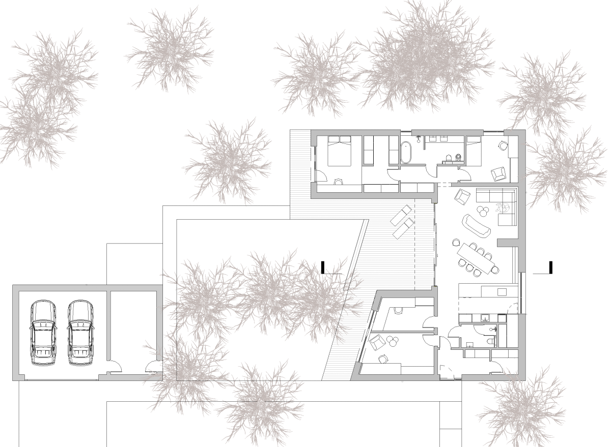
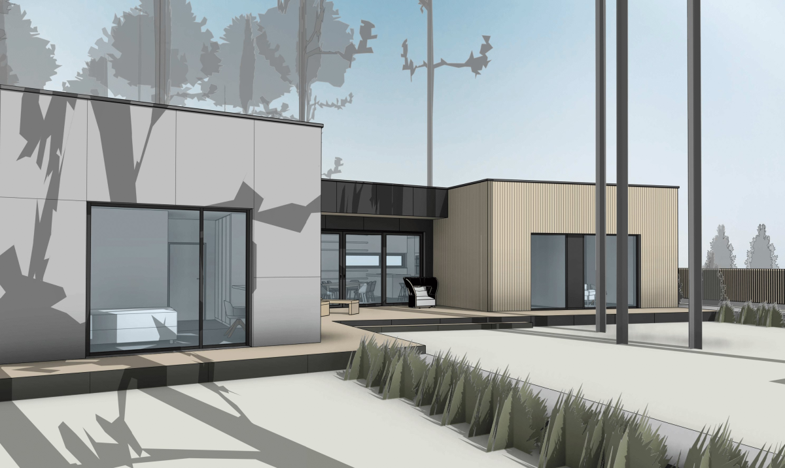
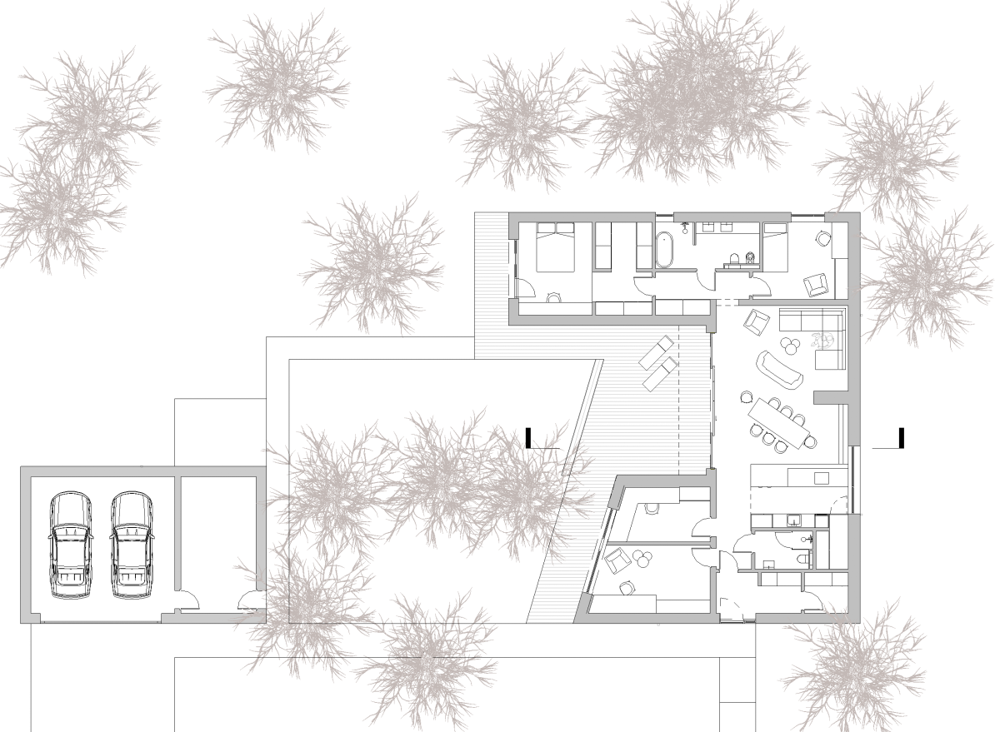
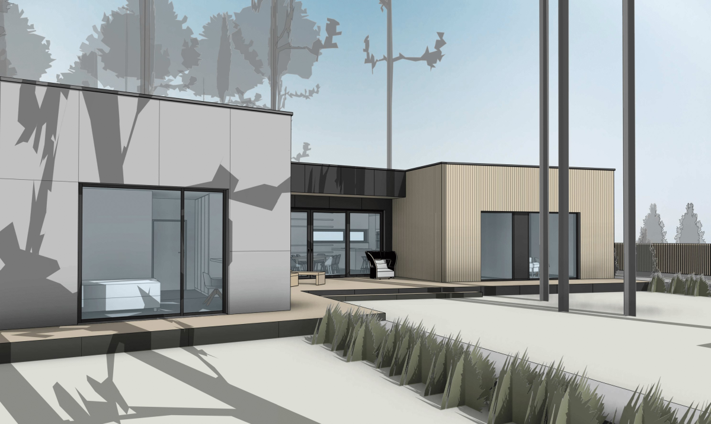
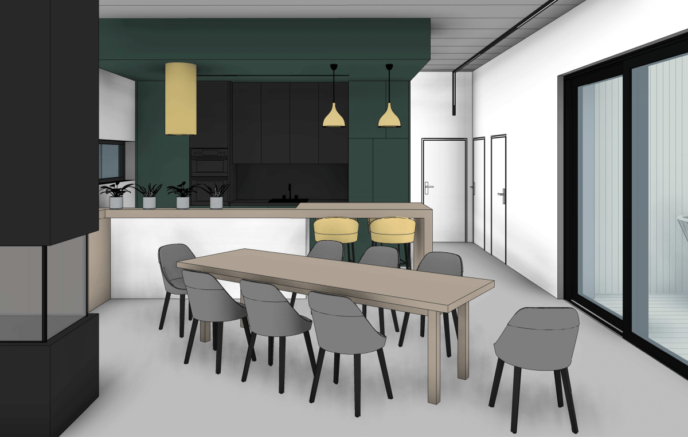
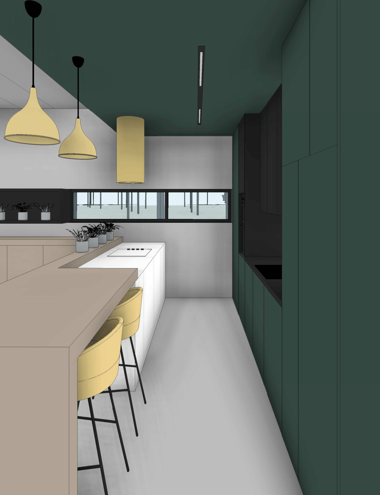
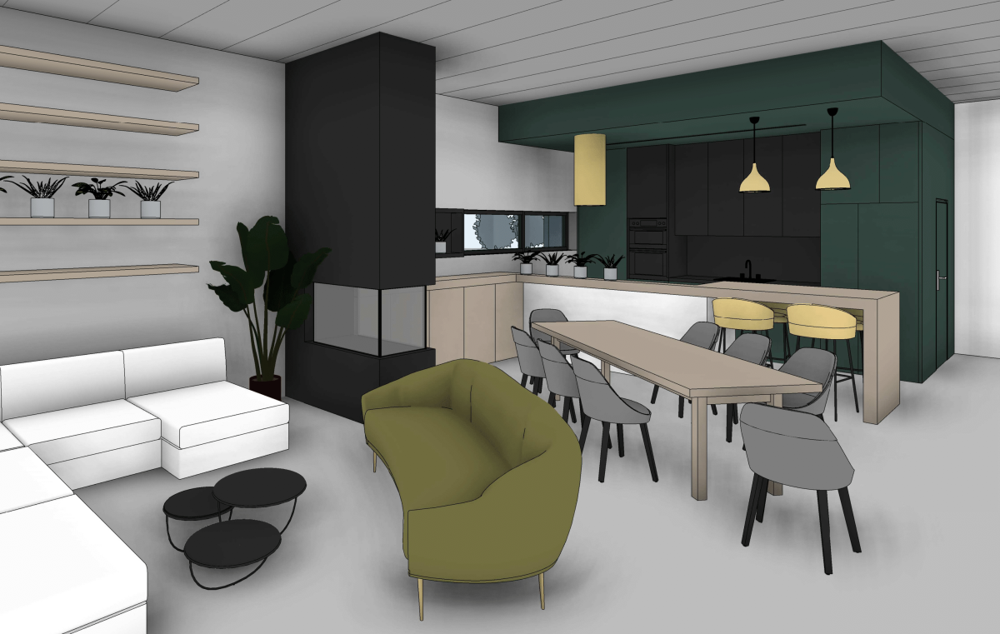
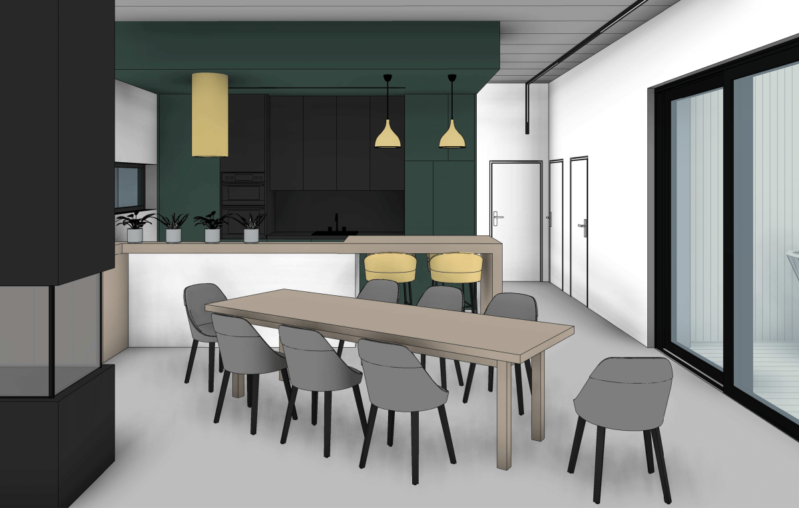
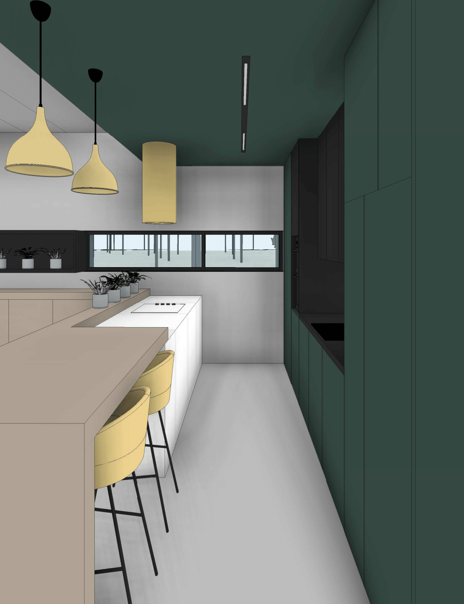
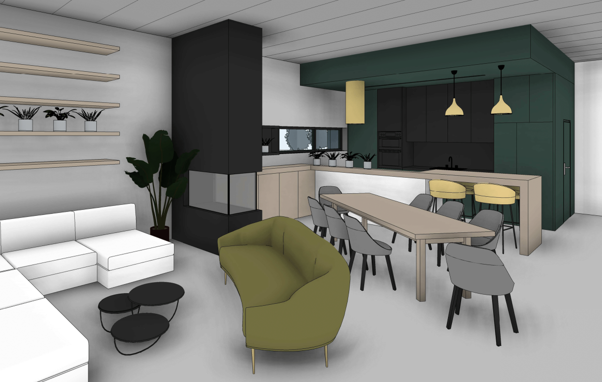

Forest House
Forest House został zaprojektowany na przepięknie zadrzewionym terenie, porośniętym wysokimi sosnami. Dom parterowy wymaga zaprojektowania większej powierzchni zabudowy, co stanowiło nie lada wyzwanie, bo inwestorzy pragnęli aby jednocześnie na działce zostało wyciętych jak najmniej drzew. Na szczęście sprostaliśmy temu tworząc bryłę w kształcie litery U.
Inwestorzy podkreślają swój introwertyczny charakter, dlatego dom został zaprojektowany jako zamknięty od strony drogi dojazdowej. Budynek otwiera się na południe - jego skrzydła tworzą częściowo zamknięte patio, dzięki czemu została zapewniona intymność inwestorów. Nad tarasem zaprojektowano zadaszenie w taki sposób aby latem chronił pomieszczenia przed nadmiernym przegrzaniem, a zimą aby czerpać z promieni słonecznych jak najwięcej darmowego ciepła.
W niedalekiej odległości od domu zlokalizowano garaż z warsztatem.
- Projekt: 2022
- Miejscowość: Karczewo
- Powierzchnia użytkowa: 154,77 m²
 




 




